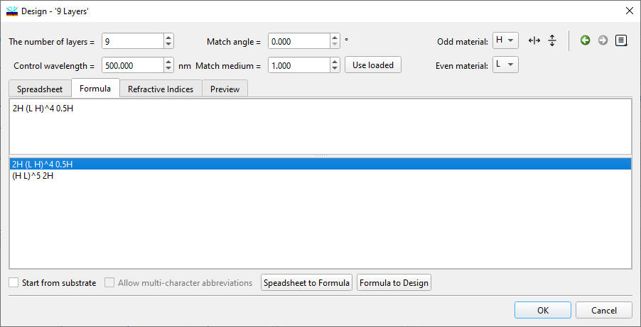

Design Formula Editing
Design Formula Editing
Navigation: OptiLayer Menu Commands > Data Menu > Design Database > Design Editor >
Design Formula Editing
` <idh_design_editor.html>`__ ` <idh_design_editor.html>`__ ` <idh_layer_status.html>`__
Describing design structures using formulas is commonly convenient and recognized, especially when specifying layer optical thicknesses in quarter-wave units. In these formulas, the materials of the layers are represented by their abbreviations. An example of such a formula would include:
H 0.5L 2H L
corresponds to a 4-layer design where the optical thicknesses of the layers are equal to 1, 0.5, 2, and 1 in Quarter-Wave Optical Thickness (QWOT) units, respectively. In such depictions, the factor 1 can be omitted for simplification. When a specific sequence of layers is repeated within the design, this repetition is typically indicated by using a power index. The OptiLayer Formula Editor, a tool designed for editing and creating layer structure formulas, supports this notation. It recognizes a power index, written as ^n, following a group of layers enclosed in brackets to denote repetition. For example, the formula
(H L)^4 H
corresponds to a 9-layer design in which the sequence of layers represented as (H L)—where “H” might stand for a high refractive index material and “L” for a low refractive index material—is repeated 4 times, followed by an additional layer. This notation simplifies the depiction of repetitive layer structures in optical design formulas.

You can utilize the Formula Editor located in the second tab of the Design editor window both to create a new design formula and to alter an existing one. If the “Start from the substrate” box is checked, the layer sequence is configured to begin from the substrate side. Conversely, if your layer ordering convention begins from the ambient medium, you should uncheck this box. The “Allow two-character abbreviations” checkbox enables a more complex mode that accepts two-character abbreviations for material identifiers. To ensure accurate formula parsing in this mode, different material abbreviations must be separated by spaces. The “Spreadsheet to Formula” button transforms the current design displayed in the Spreadsheet tab into a formulaic representation. The “Formula to Design” button applies updates to the actual design thicknesses if the formula is correctly input. OptiLayer retains a record of all edited designs throughout a session. If you wish to review or modify previous design formulas, you can do so by selecting them from the list box located at the bottom of the window. To confirm and implement changes to the design, press the OK button. If the formula entered cannot be recognized as a valid design, you will be prompted either to adjust the formula or to cancel and discard the changes by selecting the Cancel button.